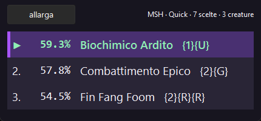
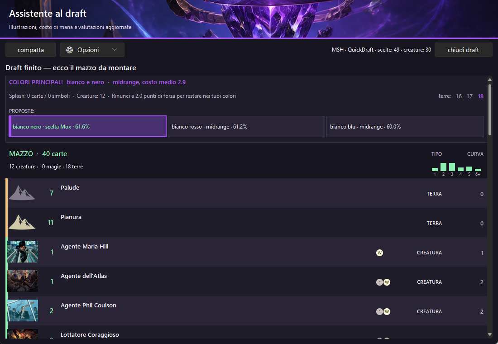

Il tuo assistente per MTG Arena
Consigli Draft in tempo reale, un mazzo finale più solido e dati chiari sulle tue partite. Mox lavora sul tuo PC; condividi dati anonimi soltanto se lo scegli.
Scarica MOX per Windows
Dentro Mox
Una scelta alla volta, fino al mazzo finale
Durante il Draft Mox ordina le opzioni e spiega il contesto. Alla fine propone una base da 40 carte, curva e fonti di mana comprese. I consigli restano locali: il sito mostra solo dati aggregati.


Matchup tra archetipi
Quanto performa un archetipo A contro un archetipo B. Una percentuale compare solo da 100 partite affidabili per coppia.
🔒
Caricamento matchup
Verifica disponibilità in corso…
Come funzionano i dati
30+ percentuali
Win rate e quota meta compaiono solo quando il campione raggiunge la soglia prevista.
100+ matchup
Ogni confronto tra due archetipi richiede almeno 100 partite affidabili.
Dati anonimi
Nessun nome giocatore e nessun dato personale viene mostrato nel meta pubblico.
Nessun numero inventato
Sotto soglia mostriamo conteggi reali e “Dati insufficienti”, non percentuali finte.